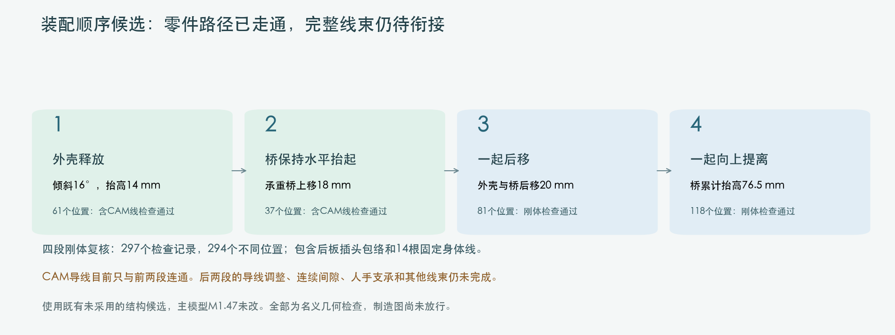
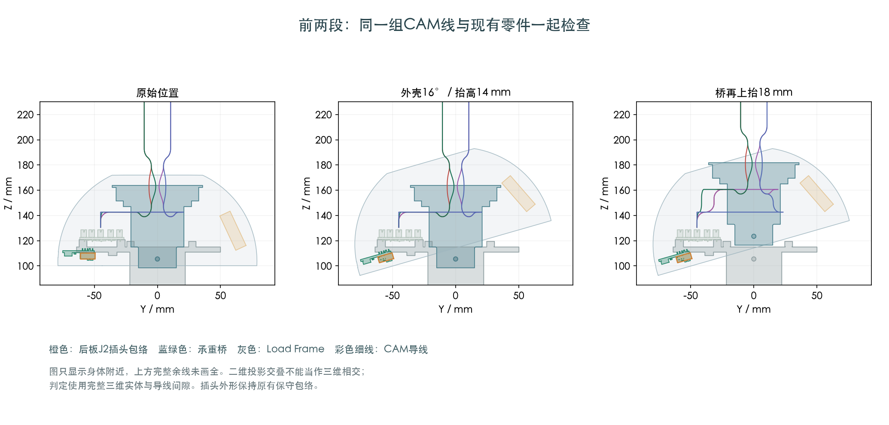

四段刚体检查通过。完整线束仍待衔接；主模型M1.47与硬件文件保持，制造图尚未放行。

297个检查记录、294个不同位置。包含身体与后板插头包络、14根固定身体线。后续头部件尚未安装；使用既有未采用的结构候选。
61+37个记录，392条保存曲线与此前联合抬升结果逐条相同；两段之间的边界保持。完整名义线长未缩短。

三根受限CAM线分别找到分步后移路径，第4根已有路线；合并检查仍有线间间隙问题，后移阶段尚未整体通过。
最初合并在第3、第4根之间只有约0.173mm保守间隙，低于研究采用的0.3mm预留。因此继续比较第4根的临时弯线，以及第1/2根配对收弯的时机，没有增加接口或修改打印件。
官方目录有PHR-5胶壳的名义外形尺寸。当前模型还保留板座法向余量和未完全确认的插合位置；这次没有缩小插头来消除检查结果。
后移和竖直提离时四根线的衔接、完整连续间隙、H01/H04带线装入、其他跨关节线和FPC，以及人手/扎带操作。真实压接外形和首件仍需后续验证。
这些范围分别记录，有限几何通过不代表实物装配或制造已经放行。